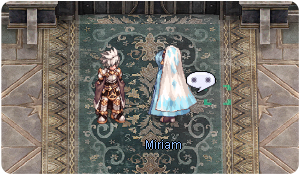
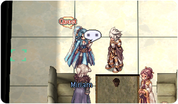

File list
This special page shows all uploaded files.
{kind=link}
{kind=link}
| Date | Name | Thumbnail | Size | User | Description | Versions |
|---|---|---|---|---|---|---|
| 09:35, 3 July 2016 | 18963.png (file) | 10 KB | Lunch | 1 | ||
| 17:40, 1 September 2016 | 18997.png (file) |  |
6 KB | Mayo | 1 | |
| 13:29, 14 March 2023 | 18 01.png (file) | 124 KB | Tokeiburu | 1 | ||
| 13:39, 14 March 2023 | 18 02.png (file) | 127 KB | Tokeiburu | 1 | ||
| 13:45, 14 March 2023 | 18 03.png (file) |  |
126 KB | Tokeiburu | 1 | |
| 13:52, 14 March 2023 | 18 04.png (file) |  |
129 KB | Tokeiburu | 1 | |
| 14:02, 14 March 2023 | 18 05.png (file) |  |
129 KB | Tokeiburu | 1 | |
| 14:05, 14 March 2023 | 18 06.png (file) |  |
140 KB | Tokeiburu | 1 | |
| 14:20, 14 March 2023 | 18 07.png (file) | 130 KB | Tokeiburu | 1 | ||
| 14:29, 14 March 2023 | 18 08.png (file) | 127 KB | Tokeiburu | 1 | ||
| 15:04, 14 March 2023 | 18 09.png (file) | 129 KB | Tokeiburu | 1 | ||
| 15:04, 14 March 2023 | 18 10.png (file) |  |
132 KB | Tokeiburu | 1 | |
| 15:08, 14 March 2023 | 18 11.png (file) | 137 KB | Tokeiburu | 1 | ||
| 15:15, 14 March 2023 | 18 12.png (file) |  |
134 KB | Tokeiburu | 1 | |
| 19:35, 14 March 2023 | 18 13.png (file) |  |
135 KB | Tokeiburu | 1 | |
| 19:38, 14 March 2023 | 18 14.png (file) | 136 KB | Tokeiburu | 1 | ||
| 20:22, 14 March 2023 | 18 15.png (file) | 135 KB | Tokeiburu | 1 | ||
| 20:26, 14 March 2023 | 18 16.png (file) | 136 KB | Tokeiburu | 1 | ||
| 20:35, 14 March 2023 | 18 17.png (file) | 137 KB | Tokeiburu | 1 | ||
| 20:41, 14 March 2023 | 18 18.png (file) | 126 KB | Tokeiburu | 1 | ||
| 20:54, 14 March 2023 | 18 19.png (file) |  |
141 KB | Tokeiburu | 1 | |
| 21:00, 14 March 2023 | 18 20.png (file) |  |
117 KB | Tokeiburu | 1 | |
| 21:07, 14 March 2023 | 18 21.png (file) |  |
138 KB | Tokeiburu | 1 | |
| 21:10, 14 March 2023 | 18 22.png (file) |  | 137 KB | Tokeiburu | 1 | |
| 21:11, 14 March 2023 | 18 23.png (file) | 121 KB | Tokeiburu | 1 | ||
| 21:16, 14 March 2023 | 18 24.png (file) | 127 KB | Tokeiburu | 1 | ||
| 21:21, 14 March 2023 | 18 25.png (file) | 124 KB | Tokeiburu | 1 | ||
| 21:23, 14 March 2023 | 18 26.png (file) |  | 94 KB | Tokeiburu | 1 | |
| 09:35, 3 July 2016 | 19026.png (file) | 8 KB | Lunch | 1 | ||
| 07:22, 27 January 2017 | 19033 rift decoration.png (file) | 8 KB | Renata | 1 | ||
| 07:04, 27 January 2017 | 1938 infinity violin.png (file) | 11 KB | Renata | 1 | ||
| 08:19, 18 October 2016 | 1939.png (file) | 9 KB | Halves | 1 | ||
| 09:35, 3 July 2016 | 19518.png (file) | 7 KB | Lunch | 1 | ||
| 01:02, 19 August 2017 | 19519.png (file) |  |
7 KB | KilluaYoukai | Hat preview | 1 |
| 09:36, 3 July 2016 | 19676.png (file) | 6 KB | Lunch | 1 | ||
| 15:00, 3 August 2017 | 19815.png (file) |  |
9 KB | Tokeiburu | 1 | |
| 15:58, 8 March 2019 | 1986.gif (file) |  |
82 KB | Alice | 1 | |
| 15:58, 8 March 2019 | 1987.gif (file) | 33 KB | Alice | 1 | ||
| 15:58, 8 March 2019 | 1989.gif (file) | 6 KB | Alice | 1 | ||
| 12:31, 5 October 2018 | 1991.gif (file) | 15 KB | AloeLeaflet | 1 | ||
| 08:05, 6 April 2016 | 19914 costume ferlock's hat.png (file) |  |
6 KB | Renata | 1 | |
| 07:04, 27 January 2017 | 1994 infinity whip.png (file) | 10 KB | Renata | 1 | ||
| 08:19, 18 October 2016 | 1995.png (file) |  |
7 KB | Halves | 1 | |
| 20:47, 17 March 2019 | 1 F PRIEST.gif (file) |  |
2 KB | Panic | 1 | |
| 11:43, 10 February 2021 | 1aac9d64e87a73daf7232323233279456ad3c29a.png (file) | 41 KB | Ludrath | 2222 | 1 | |
| 16:36, 7 March 2021 | 1mSCSpam.gif (file) |  |
6.21 MB | G00suede | 1 | |
| 11:55, 25 August 2018 | 1st job skills.JPG (file) | 33 KB | Leriaskho | 1 | ||
| 18:31, 4 January 2021 | 1st power plant.png (file) | 10 KB | I Know To Write | 1 | ||
| 10:42, 11 May 2019 | 2-2 brewing.jpg (file) | 33 KB | Alice | 1 | ||
| 10:42, 11 May 2019 | 2-2 dps.jpg (file) | 30 KB | Alice | 1 |
{kind=link}
{kind=link}
{kind=link}
{kind=link}
{kind=link}
{kind=link}
{kind=link}
{kind=link}
{kind=link}
{kind=link}